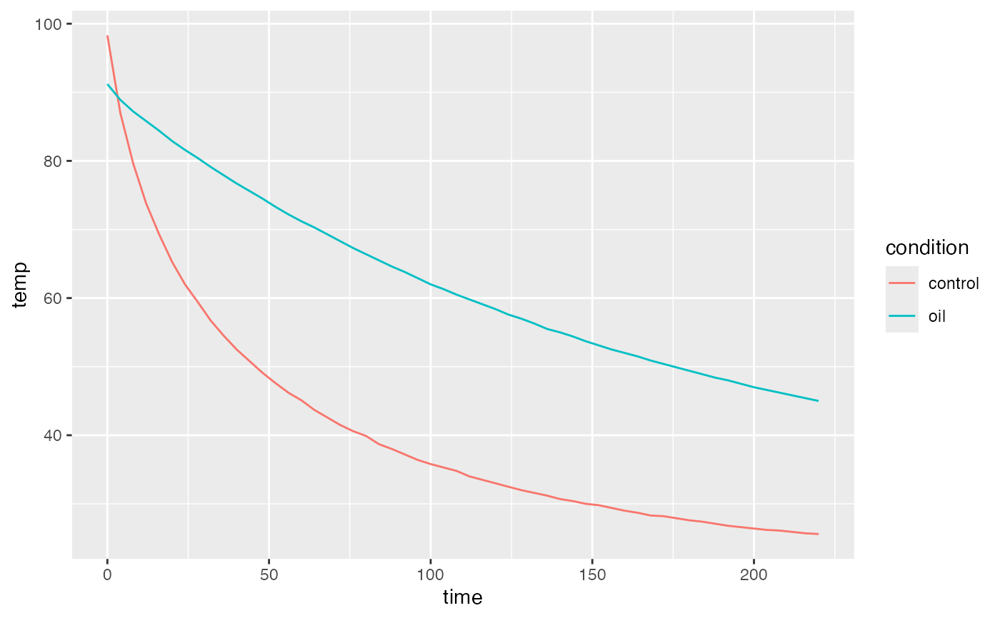
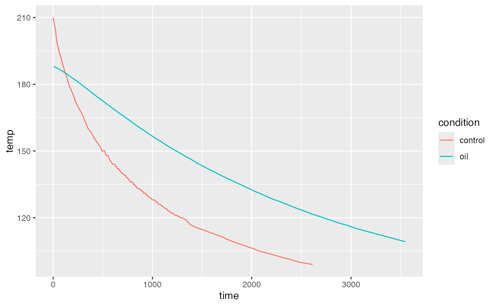

Temperature of a mug of water as it cools.
Format
A data frame with the following variables.
timetime in seconds
temptemperature in Celsius (
CoolingWater1,CoolingWater2) or Fahrenheit (CoolingWater3,CoolingWater4)
Source
These data were collected by Stan Wagon and his students at Macelester
College to explore Newton's Law of Cooling and the ways that the law
fails to capture all of the physics involved in cooling water.
CoolingWater1 and CoolingWater2 appeared in a plot in Wagon (2013)
and were (approximatley) extracted from the plot.
CoolingWater3 and CoolingWater4 appeared in a plot in Wagon (2005).
The data in
CoolingWater2 and CoolingWater4 were collected with a film of oil on
the surface of the water to minimize evaporation.
References
R. Portmann and S. Wagon. "How quickly does hot water cool?" Mathematica in Education and Research, 10(3):1-9, July 2005.
R. Israel, P. Saltzman, and S. Wagon. "Cooling coffee without solving differential equations". Mathematics Magazine, 86(3):204-210, 2013.
Examples
data(CoolingWater1)
data(CoolingWater2)
data(CoolingWater3)
data(CoolingWater4)
if (require(ggformula)) {
gf_line(
temp ~ time, color = ~ condition,
data = rbind(CoolingWater1, CoolingWater2))
}

if (require(ggformula)) {
gf_line(
temp ~ time, color = ~ condition,
data = rbind(CoolingWater3, CoolingWater4))
}
